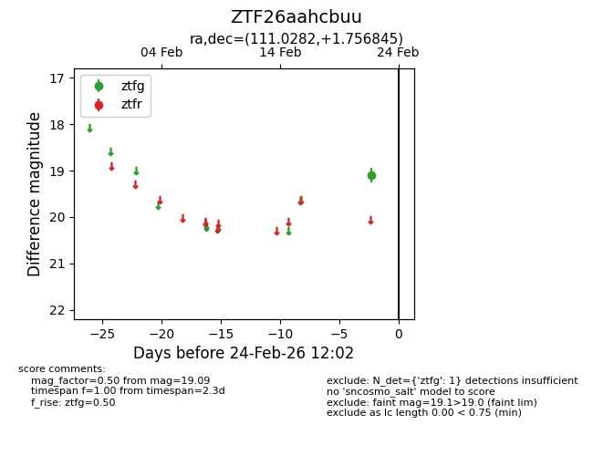
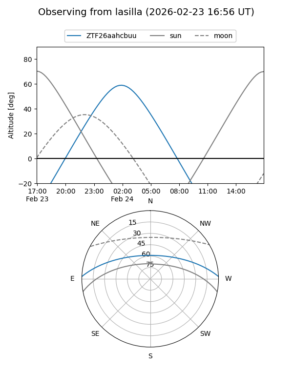
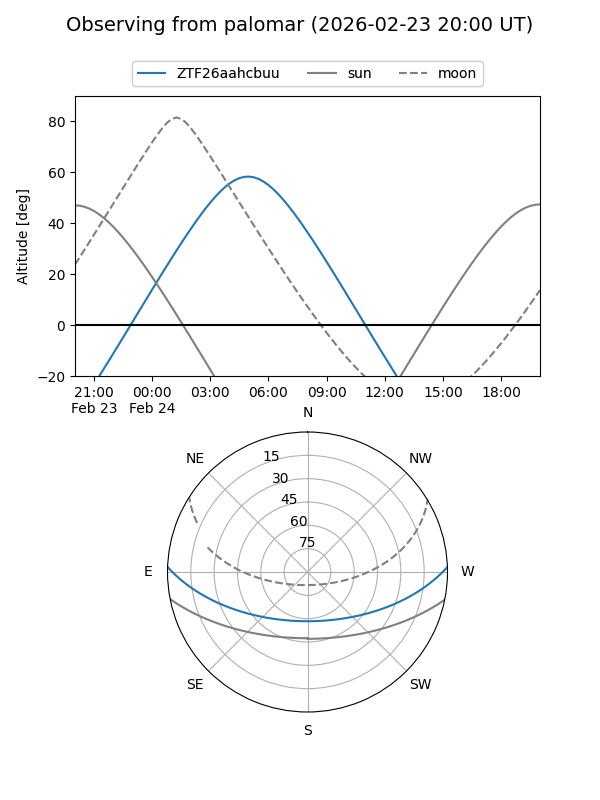

ZTF26aahcbuu
Target ZTF26aahcbuu at 2026-02-24 12:03
Aliases and brokers:
FINK: link
Lasair: link
ALeRCE: link
alt names
ZTF26aahcbuu (ztf,fink_ztf)
Coordinates:
equatorial (ra, dec) = 111.0282,+1.75685
equatorial (HMS+DMS) = 07:24:06.77,+01:45:24.64
galactic (l, b) = (215.1010,+8.06967)
Flags:
Photometry:
last ztfg=19.09
1 ztfg detections
Lightcurve

Visibility


Additional plots